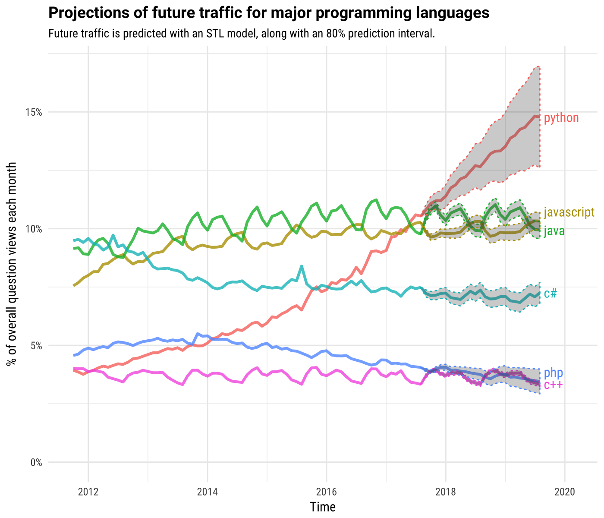
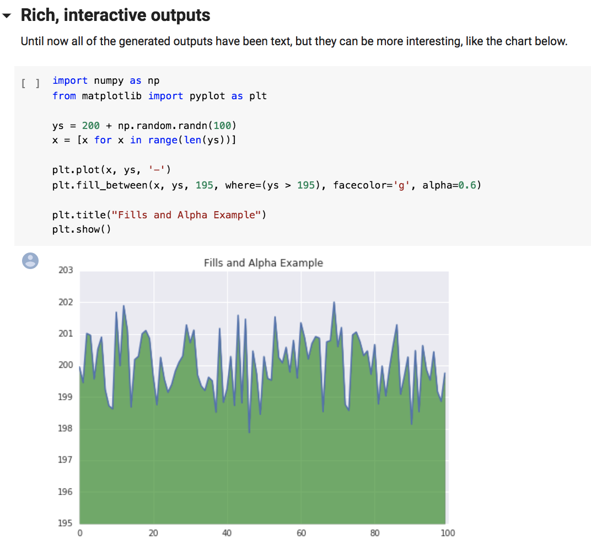
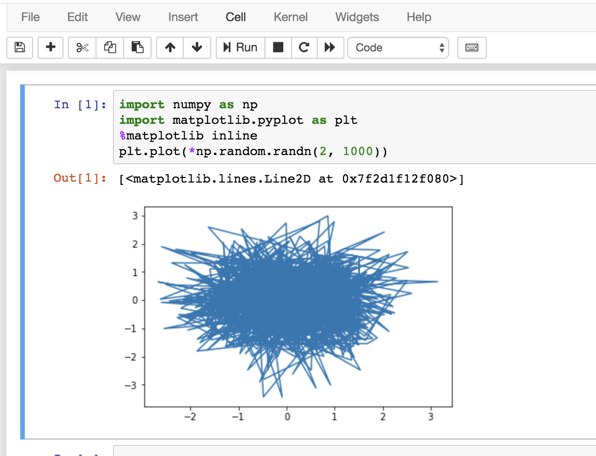

- 00 开篇词 从工程的角度深入理解Python.md.html
- 01 如何逐步突破，成为Python高手？.md.html
- 02 Jupyter Notebook为什么是现代Python的必学技术？.md.html
- 03 列表和元组，到底用哪一个？.md.html
- 04 字典、集合，你真的了解吗？.md.html
- 05 深入浅出字符串.md.html
- 06 Python “黑箱”：输入与输出.md.html
- 07 修炼基本功：条件与循环.md.html
- 08 异常处理：如何提高程序的稳定性？.md.html
- 09 不可或缺的自定义函数.md.html
- 10 简约不简单的匿名函数.md.html
- 11 面向对象（上）：从生活中的类比说起.md.html
- 12 面向对象（下）：如何实现一个搜索引擎？.md.html
- 13 搭建积木：Python 模块化.md.html
- 14 答疑（一）：列表和元组的内部实现是怎样的？.md.html
- 15 Python对象的比较、拷贝.md.html
- 16 值传递，引用传递or其他，Python里参数是如何传递的？.md.html
- 17 强大的装饰器.md.html
- 18 metaclass，是潘多拉魔盒还是阿拉丁神灯？.md.html
- 19 深入理解迭代器和生成器.md.html
- 20 揭秘 Python 协程.md.html
- 21 Python并发编程之Futures.md.html
- 22 并发编程之Asyncio.md.html
- 23 你真的懂Python GIL（全局解释器锁）吗？.md.html
- 24 带你解析 Python 垃圾回收机制.md.html
- 25 答疑（二）：GIL与多线程是什么关系呢？.md.html
- 26 活都来不及干了，还有空注意代码风格？！.md.html
- 27 学会合理分解代码，提高代码可读性.md.html
- 28 如何合理利用assert？.md.html
- 29 巧用上下文管理器和With语句精简代码.md.html
- 30 真的有必要写单元测试吗？.md.html
- 31 pdb & cProfile：调试和性能分析的法宝.md.html
- 32 答疑（三）：如何选择合适的异常处理方式？.md.html
- 33 带你初探量化世界.md.html
- 34 RESTful & Socket：搭建交易执行层核心.md.html
- 35 RESTful & Socket：行情数据对接和抓取.md.html
- 36 Pandas & Numpy：策略与回测系统.md.html
- 37 Kafka & ZMQ：自动化交易流水线.md.html
- 38 MySQL：日志和数据存储系统.md.html
- 39 Django：搭建监控平台.md.html
- 40 总结：Python中的数据结构与算法全景.md.html
- 41 硅谷一线互联网公司的工作体验.md.html
- 42 细数技术研发的注意事项.md.html
- 43 Q&A：聊一聊职业发展和选择.md.html
- 加餐 带你上手SWIG：一份清晰好用的SWIG编程实践指南.md.html
- 结束语 技术之外的几点成长建议.md.html
- 捐赠
02 Jupyter Notebook为什么是现代Python的必学技术？
你好，我是景霄。
Stack Overflow 曾在2017年底，发布了在该站上各种语言的提问流量。其中，Python已经超过了JavaScript成为了流量最高的语言，预测在2020年前会远远甩开JavaScript。

可能你已经知道，Python在14年后的“崛起”，得益于机器学习和数学统计应用的兴起。那为什么Python如此适合数学统计和机器学习呢？作为“老司机”的我可以肯定地告诉你，Jupyter Notebook （https://jupyter.org/）功不可没。
毫不夸张地说，根据我对Facebook等硅谷一线大厂的了解，一个Python工程师如果现在还不会使用Jupyter Notebook的话，可能就真的太落伍了。
磨刀不误砍柴工，高效的工具让我们的编程事半功倍。这一节课，我就来带你学习一下Jupyter Notebook，为后面的Python学习打下必备基础。
什么是Jupyter Notebook？
说了这么多，到底什么是Jupyter Notebook？按照Jupyter 创始人 Fernando Pérez的说法，他最初的梦想是做一个综合 Ju （Julia）、Py （Python）和 R 三种科学运算语言的计算工具平台，所以将其命名为Ju-Py-te-R。发展到现在，Jupyter 已经成为一个几乎支持所有语言，能够把软件代码、计算输出、解释文档、多媒体资源整合在一起的多功能科学运算平台。
英文里说一图胜千言（A picture is worth a thousand words）。看下面这个图片，你就明白什么是Jupyter Notebook了。

你在一个框框中直接输入代码，运行，它立马就在下面给你输出。怎么样，是不是很酷？你可能会纳闷儿，这样一个看起来“华而不实”的玩意儿，真的就成了Python社区的颠覆者吗？说实话放在几年前我也是不信的。所以 Jupyter Notebook 的影响究竟有多大呢？
Jupyter Notebook 的影响力
我们衡量一个技术的影响力，或者说要用自己的技术去影响世界时，必定绕不开这个技术对教育界的影响力。
就拿微软的Word文本处理系统来说吧。从纯技术角度来讲，Word的单机设计理念早已落后时代20年。但以Google Doc为代表的在线文档系统，却并没有像想象中那样，实现对Word的降维打击。
直观的原因是用户习惯，使用Word修改文档，那就来回发几十遍呗，用着也还可以。但更深刻来想，之所以养成这样的用户习惯，是因为我们的教育根源。教育系统从娃娃抓起，用小学中学大学十几年的时间，训练了用户Word的使用习惯。到工作中，老员工又会带着新员工继续使用Word，如此行程技术影响力生生不息的正向反馈。
回到我们今天的主题，我们来看Jupyter Notebook。从2017年开始，已有大量的北美顶尖计算机课程，开始完全使用Jupyter Notebook作为工具。比如李飞飞的CS231N《计算机视觉与神经网络》课程，在16年时作业还是命令行Python的形式，但是17年的作业就全部在Jupyter Notebook上完成了。再如UC Berkeley的《数据科学基础》课程，从17年起，所有作业也全部用Jupyter Notebook完成。
而Jupyter Notebook 在工业界的影响力更甚。在Facebook，虽然大规模的后台开发仍然借助于功能齐全的IDE，但是几乎所有的中小型程序，比如内部的一些线下分析软件，机器学习模块的训练都是借助于Jupyter Notebook完成的。据我了解，在别的硅谷一线大厂，例如Google的AI Research部门Google Brain，也是清一色地全部使用Jupyter Notebook，虽然用的是他们自己的改进定制版，叫 Google Colab。
看到这里，相信你已经认可了Jupter Notebook现如今的江湖地位。不过，说到技术的选择，有些人会说，这个技术流行，我们应该用；有些人认为，阿里已经在用这个技术了，这就是未来，我们也要用等等。不得不说，这些都是片面的认知。不管是阿里还是Facebook用的技术，其实不一定适用你的应用场景。
我经常会鼓励技术同行，对于技术选择要有独立的思考，不要人云亦云。最起码你要去思考，Facebook为什么选择这个技术？这个技术解决了哪些问题？Facebook为什么不选择别的技术？有哪些局限？单从选择结果而言，Facebook选择的技术很可能是因为它有几百个产品线，几万个工程师。而同样的技术，在一个十人的团队里，反而成了拖累。
在这里，我不想忽悠你任何技术，我想教会你的是辩证分析技术的思考方法。接下来，我们就来看看，Jupyter究竟解决了哪些别人没有解决的问题。
Jupyter的优点
整合所有的资源
在真正的软件开发中，上下文切换占用了大量的时间。什么意思呢？举个例子你就很好理解了，比如你需要切换窗口去看一些文档，再切换窗口去用另一个工具画图等等。这些都是影响生产效率的因素。
正如我前面提到的，Jupyter通过把所有和软件编写有关的资源全部放在一个地方，解决了这个问题。当你打开一个Jupyter Notebook时，就已经可以看到相应的文档、图表、视频和相应的代码。这样，你就不需要切换窗口去找资料，只要看一个文件，就可以获得项目的所有信息。
交互性编程体验
在机器学习和数学统计领域，Python编程的实验性特别强，经常出现的情况是，一小块代码需要重写100遍，比如为了尝试100种不同的方法，但别的代码都不想动。这一点和传统的Python开发有很大不同。如果是在传统的Python开发流程中，每一次实验都要把所有代码重新跑一遍，会花费开发者很多时间。特别是在像Facebook这样千万行级别的代码库里，即使整个公司的底层架构已经足够优化，真要重新跑一遍，也需要几分钟的时间。
而Jupyter Notebook 引进了Cell的概念，每次实验可以只跑一小个Cell里的代码；并且，所见即所得，在代码下面立刻就可以看到结果。这样强的互动性，让Python研究员可以专注于问题本身，不被繁杂的工具链所累，不用在命令行直接切换，所有科研工作都能在Jupyter上完成。
零成本重现结果
同样在机器学习和数学统计领域，Python的使用是非常短平快的。常见的场景是，我在论文里看到别人的方法效果很好，可是当我去重现时，却发现需要pip重新安装一堆依赖软件。这些准备工作可能会消耗你80%的时间，却并不是真正的生产力。
Jupyter Notebook如何解决这个问题呢？
其实最初的Jupyter Notebook也是挺麻烦的，需要你先在本机上安装IPython引擎及其各种依赖软件。不过现在的技术趋势，则是彻底云端化了，例如Jupyter官方的Binder平台（介绍文档：https://mybinder.readthedocs.io/en/latest/index.html）和Google提供的 Google Colab环境（介绍：https://colab.research.google.com/notebooks/welcome.ipynb）。它们让Jupyter Notebook变得和石墨文档、Google Doc在线文档一样，在浏览器点开链接就能运行。
所以，现在当你用Binder打开一份GitHub上的Jupyter Notebook时，你不需要安装任何软件，直接在浏览器打开一份代码，就能在云端运行。
Jupyter Notebook 初体验
学习技术的最好方法就是用技术。不过，在今天的篇幅里，我不可能带你完全学会Jupyter Notebook的所有技巧。我想先带你直接感受一下，使用Jupyter Notebook的工作体验。
比如这样一个GitHub文件。在Binder中，你只要输入其对应的GitHub Repository的名字或者URL，就能在云端打开整个Repository，选择你需要的notebook，你就能看到下图这个界面。

每一个Jupyter的运行单元都包含了In、Out的Cell。如图所示，你可以使用Run按钮，运行单独的一个Cell。当然，你也可以在此基础上加以修改，或者新建一个notebook，写成自己想要的程序。赶紧打开链接试一试吧！
另外，我还推荐下面这些Jupyter Notebook，作为你实践的第一站。
第一个是Jupyter官方：https://mybinder.org/v2/gh/binder-examples/matplotlib-versions/mpl-v2.0/?filepath=matplotlib_versions_demo.ipynb
第二个是Google Research提供的Colab环境，尤其适合机器学习的实践应用：https://colab.research.google.com/notebooks/basic_features_overview.ipynb
如果你想在本地或者远程的机器上安装Jupyter Notebook，可以参考下面的两个文档。
安装：https://jupyter.org/install.html
运行：https://jupyter.readthedocs.io/en/latest/running.html#running
总结
这节课，我为你介绍了Jupyter Notebook，并告诉你它为什么日趋成为Python社区的必学技术。这主要是因为它的三大特点：整合所有的资源、交互性编程体验和零成本重现结果。但还是那句话，学习技术必须动手实操。这节课后，希望你能自己动手试一试Jupyter Notebook，后面我们的一些课程代码，我也会用Jupyter Notebook的形式分享给你。
思考题
你尝试Jupyter Notebook了吗？欢迎在留言区和我分享你的使用体验。
© 2019 - 2023 Liangliang Lee. Powered by gin and hexo-theme-book.